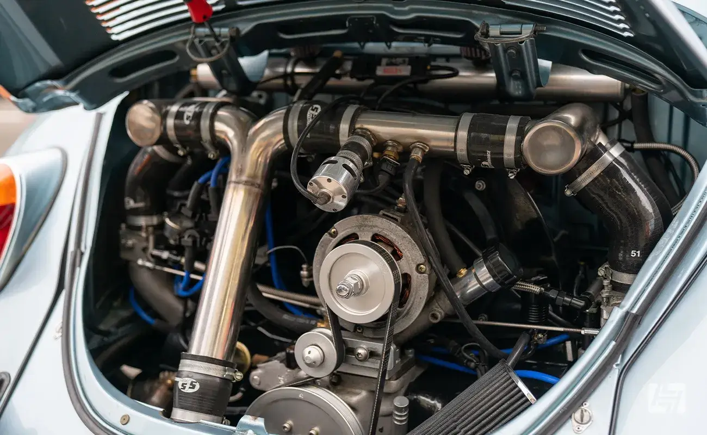
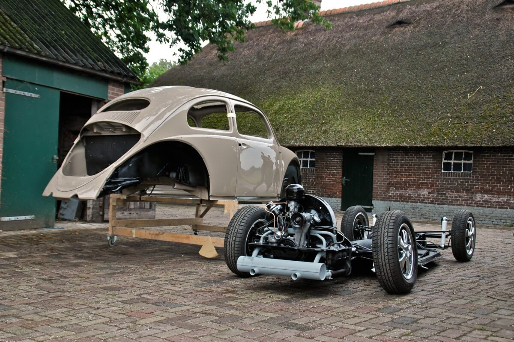
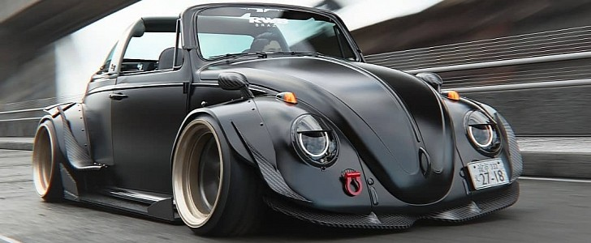
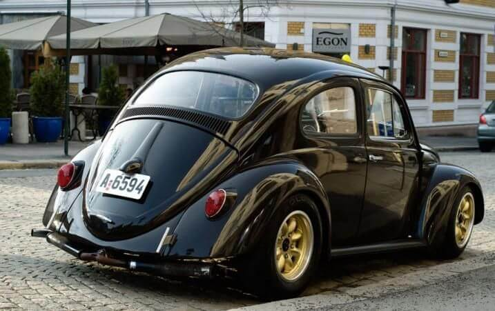
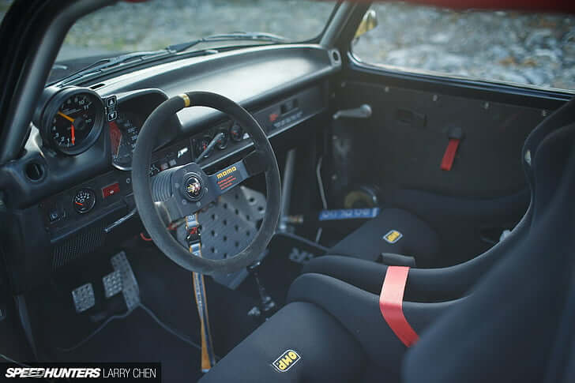
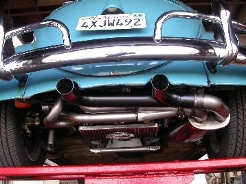

JGYPK - PIA Webes alkalmazások fejlesztése - Komplex weboldal
 A VW Beetle Classic tuningjának egyik legfontosabb része a motor teljesítményének növelése. Ennek érdekében gyakran cserélik ki a hagyományos motort sportosabb és erőteljesebb változatra. A teljesítménynövelés érdekében turbófeltöltők, teljesítményfokozó chipek és egyéb módosítások alkalmazhatók.
 A futómű tuningja is kulcsfontosságú a VW Bogár esetében. Alacsonyított felfüggesztések, sportosabb lengéscsillapítók és merevebb rugók segítenek javítani a vezetési élményt és a stabilitást. A külső megjelenés mellett ezek a módosítások jelentősen befolyásolják a jármű teljesítményét.
 A karosszéria tuningja is elengedhetetlen a VW Beetle Classic esetében. Az egyedi lökhárítók, küszöbök és spoilerek nemcsak esztétikailag emelik a jármű megjelenését, hanem a légellenállás csökkentésével és a tapadás növelésével pozitívan befolyásolják a teljesítményt.
 A kerekek és abroncsok kiválasztása is fontos szerepet játszik a tuning folyamatában. Nagyobb és könnyebb felnik, valamint sportos abroncsok segítenek javítani a tapadást és a kanyarodási képességet, valamint agresszívabb megjelenést kölcsönöznek a járműnek.
 A belső tér tuningja szintén fontos szerepet játszik a teljes tuning folyamatban. A sportosabb ülések, kormánykerék, sebességváltó és egyedi műszeregységek segítenek a vezetőnek még inkább az autóba való beleélni magát.
 A hangzás is lényeges szerepet játszik a tuningban. A sportkipufogó rendszer nemcsak agresszívabb hangzást biztosít, de a motor teljesítményének növelésében is szerepet játszik.

JGYPK - PIA Webes alkalmazások fejlesztése - Komplex weboldal